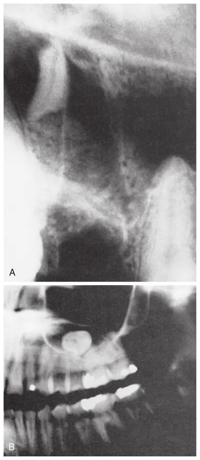

نسخه استخراجشده؛ ترجمه یا تأیید علمی انجام نشده است. وضعیت: captured
شایعترین مشکل مرتبط با دندانی که کشیده میشود، شکستن ریشههای آن است. ریشههای بلند، خمیده و واگرا که در استخوان متراکم قرار دارند، محتملترین ریشهها برای شکستناند.

سه قاعدهی پیشگیری از شکستن و جابهجایی ریشه: ۱) همیشه احتمال شکستن ریشه را در نظر بگیر، ۲) اگر احتمال شکستن بالاست، از کشیدن جراحی (باز) استفاده کن، ۳) روی یک ریشهی شکسته نیروی آپیکالی قوی وارد نکن.
و روش اصلی پیشگیری: انجام جراحی به همان شیوهای که در درسهای کشیدن دندان دیدی، یا استفاده از تکنیک کشیدن باز و برداشتن استخوان تا مقدار نیروی لازم برای برداشتن دندان کم شود.
جابهجایی ریشه — شایعترین سناریو: ریشهای که بیش از همه به فضاهای آناتومیک نامطلوب جابهجا میشود، ریشهی مولر ماگزیلاست، وقتی به داخل سینوس ماگزیلا رانده یا گم میشود. اگر ریشهی شکستهی یک مولر ماگزیلا با الواتور مستقیم و با فشار آپیکالی بیش از حد برداشته شود، ریشه میتواند به داخل سینوس ماگزیلا جابهجا شود.
سه ارزیابی که جراح باید پیش از تصمیم انجام دهد:
اگر قطعهی جابهجاشده یک نوک ریشهی کوچک ۲ یا ۳ میلیمتری باشد و دندان و سینوس عفونت از پیش موجود نداشته باشند، جراح باید یک تلاش کوتاه برای برداشتن ریشه بکند. روال این تلاش:
و اگر این تکنیک موفق نشد — اینجا قاعدهی سرنوشتساز است: هیچ عمل جراحی اضافهای نباید از راه ساکت انجام شود، و نوک ریشه باید در سینوس باقی بماند.
و منطق پشت این تصمیم: یک نوک ریشهی کوچک و غیرعفونی میتواند سر جایش بماند، چون بعید است پیامد دردسرسازی ایجاد کند. جراحی اضافه در این وضعیت، موربیدیتی بیشتری برای بیمار میسازد تا رها کردن نوک ریشه در سینوس.
و اگر نوک ریشه در سینوس رها شد، جراح باید همان تدابیری را به کار بندد که هنگام رها کردن هر نوک ریشهای به کار میبرد: بیمار باید از تصمیم آگاه شود و دستورالعمل پیگیری مناسب برای پایش منظم ریشه و سینوس دریافت کند.
و مدیریت ارتباط دهانی-سینوسی، چهار جزئی است: بخیهی هشتی روی ساکت، احتیاطهای سینوسی، آنتیبیوتیک، و اسپری بینی که با باز نگه داشتن اوستیوم، شانس عفونت را کم میکند. محتملترین سرانجام این است که آپکس ریشه به پردهی سینوس فیبروزه شود و مشکل بعدی ایجاد نشود.
ولی دو وضعیت که ارجاع را الزامی میکنند: اگر ریشهی دندان عفونی باشد یا بیمار سینوزیت مزمن داشته باشد، بیمار باید برای برداشتن نوک ریشه با رویکرد Caldwell-Luc یا آندوسکوپیک به جراح دهان و فک و صورت ارجاع شود.
و اگر قطعهی بزرگ یا کل دندان به سینوس جابهجا شود، باید برداشته شود. روش معمول، رویکرد Caldwell-Luc به داخل سینوس ماگزیلا در ناحیهی حفرهی کانین و سپس برداشتن دندان است — و این عمل باید توسط جراح دهان و فک و صورت انجام شود.
مولرهای سوم نهفتهی ماگزیلا گاهی به داخل سینوس ماگزیلا جابهجا میشوند (که از آنجا با رویکرد Caldwell-Luc برداشته میشوند). ولی اگر جابهجایی رخ دهد، شایعتر است که به فضای اینفراتمپورال باشد.
مکانیسم: حین الواسیون دندان، الواتور میتواند دندان را به سمت خلف و از میان پریوست به داخل حفرهی اینفراتمپورال براند.
موقعیت آناتومیک دندان جابهجاشده: دندان معمولاً جانبِ صفحهی پتریگوئید جانبی و پایینتر از عضلهی پتریگوئید جانبی قرار میگیرد.
و قاعدهی «یک تلاش، و بس»:
و پس از توقف عمل، سه اقدام: بیمار باید آگاه شود که دندان جابهجا شده و بعداً برداشته خواهد شد، آنتیبیوتیک باید داده شود تا احتمال عفونت کم شود، و مراقبت روتین پس از عمل باید انجام شود. دندان بعداً و پس از موضعیابی رادیوگرافیک، توسط جراح دهان و فک و صورت برداشته میشود — پس از آنکه فیبروز اطراف، دندان را در یک موقعیت ثابت پایدار کرد.